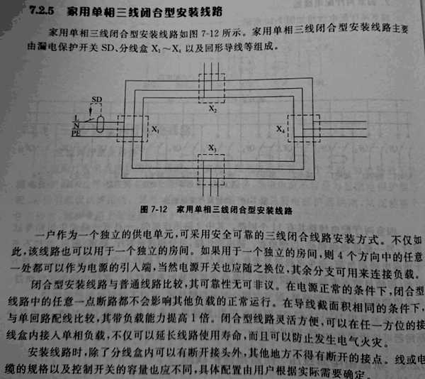

7.2.5 家用单相三线闭合型安装线路
家用单相三线闭合型安裝线路如图7-12所示，家用单相三线闭合型安装线路主要
由漏电保护开关SD、分线盒X~X，以及回形导线等组成。
图7-12 家用单相三线闭合型安装线路
一户作为一个独立的供电单元，可采用安全可靠的三线闭合线路安装方式、不仅如
此，该线路也可以用于一个独立的房间，如果用于一个独立的房间，则4个方向中的任意
一处都可以作为电源的引人端，当然电源开关也应随之换位，其余分支可用来连接负载，
闭合型安装线路与普通线路比较，其可靠性无可非议，在电源正常的条件下，闭合型
线路中的任意一点断路都不会影响其他负载的正常运行，在导线截面积相同的条件下，
与单回路配线比较，其带负载能力提高1倍，闭合型线路灵活方便，可以在任一方位的接
线盒内接人单相负载，不仅可以延长线路使用寿命，而且可以防止发生电气火灾。
安装线路时，除了分线盒内可以有断开接头外，其他地方不得有断开的接点。线或电
缆的规格以及控制开关的容量也应不同，具体配置由用户根据实际需要确定